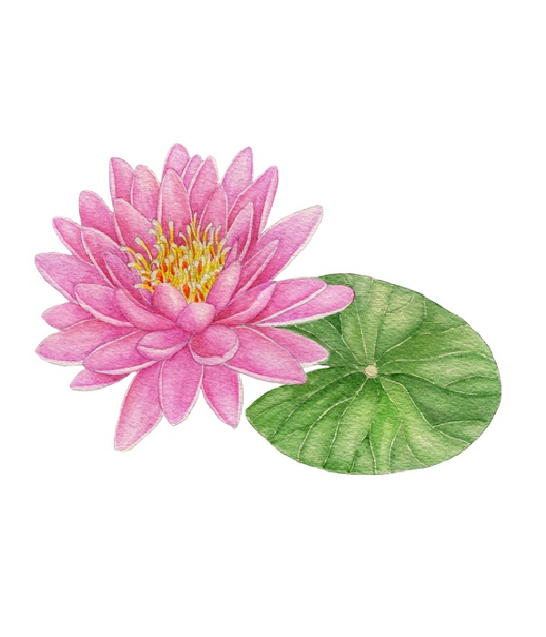

당신의 정치花는
연꽃
#군자 #순결 #청정 #신성
당신은 연꽃을 닮았습니다.
연꽃은 흐린 물에서도 예쁘게 피어나는 꽃입니다. 그런 연꽃을 닮은 당신은 흐리고 보이지 않는 정치적인 문제에서도 현실적으로 가능한 대책을 찾아 제시하곤 합니다.
특히나 당신은 개인의 자유를 해치는 일에 대해 더 민감하게 받아들이고 해결해야 한다고 생각합니다. 그리고 그만큼 강압적이고 자유를 제한하는 규정에 불만감을 가지기도 합니다.
물론 모든 경우에서 옳은 판단을 할 수는 없습니다. 하지만 당신의 냉철한 판단력은 여러가지 정치적인 문제 속에서 분명 빛을 낼 수 있을 것입니다.
반반투표는 당신과 맞는 의견이 실시간으로 나오고 있고, 간단하게 의견을 내고 지지할 수 있는 곳입니다. 그런 반반투표에서 당신의 의견을 꽃피워보는 것은 어떨까요?